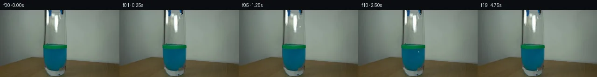

![首帧]()

Round 00
2026-11-06T05:03:54.454042+00:00像素候选变化代码 +249/−0inspection 更新
pixels 08d8a07032751ceb · code ec576d30162c87be
查看本轮 generate.py 真实 diff
--- previous/generate.py
+++ current/generate.py
@@ -0,0 +1,249 @@
+#!/usr/bin/env python3
+"""generate.py - PixelWorld-Text frame generation for paper-drop scene.
+
+Generates 20 RGB frames (256x144, 4fps) showing a blue-black grabber releasing
+a small crumpled piece of paper into a glass of blue liquid with a green
+water-level band.
+
+Frame 00 is an exact copy of first_frame.png.
+All pixel operations use numpy array manipulation; no external engines.
+"""
+
+import numpy as np
+from PIL import Image
+from pathlib import Path
+import sys
+
+# Add artifact_io for saving
+sys.path.insert(0, str(Path(__file__).parent))
+from artifact_io import save
+
+CASE_DIR = Path(__file__).parent
+H, W = 144, 256
+
+# ── Load first frame ──────────────────────────────────────────────
+first = np.array(Image.open(CASE_DIR / "first_frame.png")).astype(np.uint8)
+assert first.shape == (H, W, 3), f"Expected (144,256,3), got {first.shape}"
+
+# ── Scene geometry constants ──────────────────────────────────────
+# Glass interior bounds (x-range inside glass walls)
+GLASS_LEFT = 98
+GLASS_RIGHT = 136
+
+# Water surface y-coordinate (top of blue liquid, below green band)
+WATER_SURFACE_Y = 84
+
+# Blue liquid bottom
+LIQUID_BOTTOM_Y = 128
+
+# Green band vertical range
+GREEN_BAND_TOP = 72
+GREEN_BAND_BOT = 83
+
+# Grabber position (dark blue-black tool at right inner rim)
+GRABBER_X = 133
+GRABBER_Y_START = 6
+GRABBER_Y_END = 10
+
+# ── Define the paper ──────────────────────────────────────────────
+# Paper is a small crumpled piece, ~7 pixels in an irregular blob.
+# Modeled as cream/off-white with noise for crumpled texture.
+# Initial position: held at grabber tip at inner glass rim.
+
+# Paper pixel offsets relative to anchor (top-left corner)
+PAPER_OFFSETS = [
+ (0, 1), (0, 2),
+ (1, 0), (1, 1), (1, 2),
+ (2, 1), (2, 2),
+]
+# Paper anchor position in frame 0 (top-left of paper bounding box)
+PAPER_X0 = 130
+PAPER_Y0 = 5
+
+# Create paper texture (once, with random seed for reproducibility)
+rng = np.random.RandomState(42)
+PAPER_H = 3
+PAPER_W = 3
+# Base paper color: cream/off-white
+paper_base = np.array([205, 198, 178], dtype=np.float32)
+# Crumpled texture: per-pixel variation
+paper_pixels = np.zeros((PAPER_H, PAPER_W, 3), dtype=np.float32)
+for dy in range(PAPER_H):
+ for dx in range(PAPER_W):
+ # Each pixel gets slight variation in lightness and warmth
+ noise = rng.uniform(-12, 12, 3)
+ # Slightly more variation in red channel for warm paper tones
+ noise[0] += rng.uniform(-5, 8)
+ paper_pixels[dy, dx] = np.clip(paper_base + noise, 0, 255)
+
+paper_pixels = paper_pixels.astype(np.uint8)
+
+# ── Extract background behind paper from frame 0 ──────────────────
+# We inpaint the paper region using surrounding glass/air pixels.
+# The paper sits at the inner rim, so background is the glass wall + air.
+def get_paper_mask():
+ """Returns boolean mask of paper pixels in frame 0."""
+ mask = np.zeros((H, W), dtype=bool)
+ for dx, dy in PAPER_OFFSETS:
… diff truncated; 162 more lines …